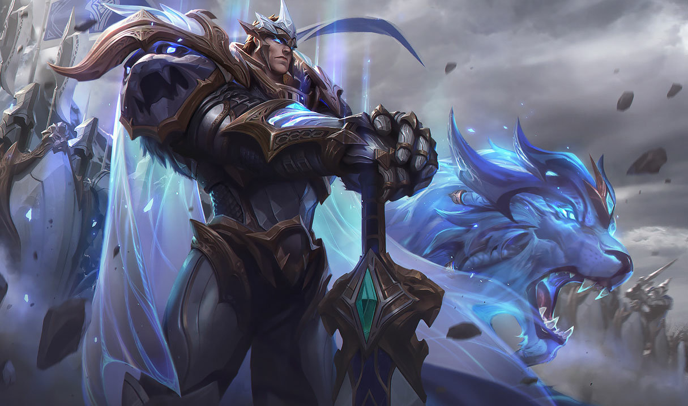

O PODER DE DEMACIA
Um guerreiro nobre e orgulhoso, Garen faz parte da Vanguarda Destemida. Popular entre seus
companheiros e respeitado o suficiente por seus inimigos, sua reputação é nada mais do que o
esperado de um herdeiro da prestigiosa família Stemmaguarda, encarregada de defender Demacia e seus
ideais. Vestido com uma armadura resistente à magia e empunhando uma poderosa espada, Garen está
sempre pronto para confrontar magos e feiticeiros no campo de batalha, em um verdadeiro furacão de
aço virtuoso.
Atributos Físicos
| Força |
Constituição |
Destreza |
Agilidade |
| 79 |
60 |
55 |
30 |
Atributos Mentais
| Inteligência |
Força de Vontade |
Percepção |
Carisma |
| 8 |
12 |
22 |
18 |